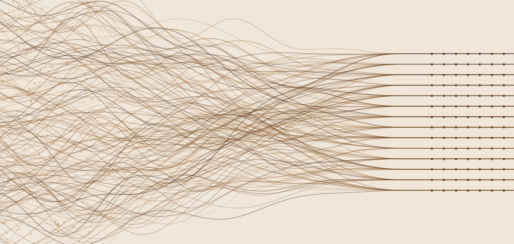

Data Engineer
BRAC IT Services Limited · Dhaka, Bangladesh- Enabled accurate, on-time reporting for BRAC's finance division, processing 10M+ records a day, by building and maintaining ELT pipelines in SQL and Python.
- Reduced query run time by 40% on tables holding millions of financial records by rewriting PL/pgSQL stored procedures and packages.
- Cut a key stakeholder report from 2+ hours to under 20 minutes by tuning the data warehouse's queries and structure.
- Improved end-to-end data processing efficiency by 30% by orchestrating workflows with Apache Airflow and Airbyte.
- Migrated BRAC University's academic and financial records with zero data loss and full audit compliance by validating data at every stage of the move.
- Raised reporting accuracy to 99%+ by working with finance and ERP teams to merge their data into one unified reporting pipeline.
- Kept bad data out of downstream reports with data quality checks, schema validation and transformation rules at every pipeline stage.